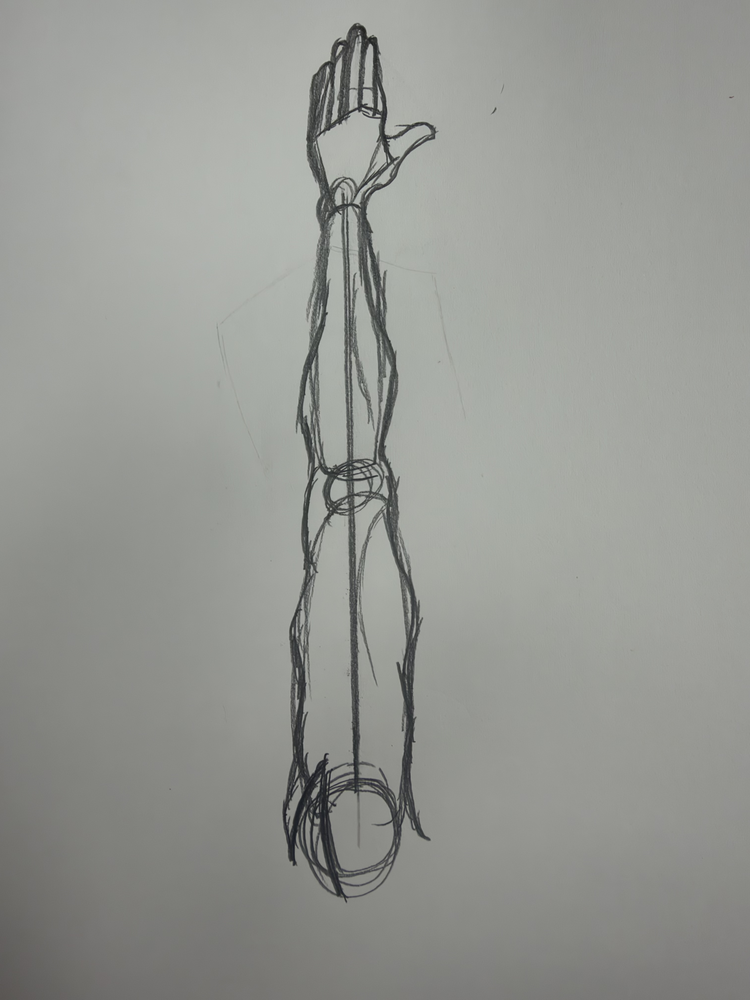

Once you got the shapes laid out you are then going to want to draw the finer details over them. Don't get too detailed, like adding all the muscle and shadow. Nut add things like the fingers, wrist, and shape of the arms. This will help with the final step especially.
Previous Next